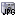
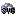
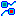
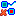
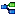
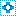
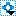
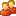

The Graph is the main component of Together Workflow Editor. It displays the graph representing the selected process or activity set. It offers the possibility to insert new elements into the graph and to visually define the flow / logic of the workflow process you are modelling.
The Graph has its own toolbars with action Shortcuts to customize the view of the process, inserting new process elements or modify existing process elements.
The toolbar on top of the graph consists of the following actions:
|  |
This action saves the graphical view of the current graph into a JPG format file. |
|  |
This action saves the graphical view of the current graph into an SVG format file. |
|
This action zooms into the graph. | |
|
This action displays graph in its actual size. | |
|
This action zooms out of the graph. | |
|
This action moves the selected participant up or left depending on the current participant orientation of the graph. | |
|
This action moves the selected participant down or right depending on the current participant orientation of the graph. | |

|
This action displays the part of the graph shown before the current part. |

|
This action displays the part of the graph shown after the current part. |
|  |
This action inserts the start and end bubbles into the graph. |
|  |
This action removes the start end bubbles from the graph. |
|
This action changes the graph's participant orientation from left/right to top/bottom and vice versa. | |
|  |
This action performs an automatic layout of the graph. |
|  |
This action inserts a new activity set. |

|
This action inserts an existing participant into the graph. |
|  |
This action selects an existing activity set. |
The toolbar on the left hand side of the graph consists of the following actions:
This action switches the mouse cursor to the selection mode. | |
|  | This action inserts a new participant into the graph. |
This action inserts a new "free text expression" participant into the graph. | |
This action inserts a "common expression participant" into the graph. | |
 | This action inserts a start of a process or activity set. |
 | This action inserts an end of a process or activity set. |
 | This action inserts an activity without implementation (manual activity performed by a human) into the graph. |
 | This action inserts a tool activity into the graph |
 | This action inserts a subflow activity into the graph. |
 | This action inserts a block activity into the graph. |
 | This action inserts a route activity into the graph. |
This action inserts a transition into the graph. | |
This action inserts an exception transition into the graph. |
The Graph provides all functions to handle participants, activities and transitions. All standard editor functions like insert, delete, move and select are supported.
New elements are inserted into the graph in two steps. First select the button of choice in the graph toolbar to change the mouse cursor into the appropriate insert mode. Then click into the graph to insert the selected element. The mouse cursor will remain in the current insert mode until you click the right mouse button, press the ESC key on your keyboard or switch to another mode by selecting a different button in the graph toolbar.
Inserting transitions into the graph is somewhat different: Transitions begin and end points must be activities. Clicking on the empty background of the graph while inserting a transition will insert a graphical break/routepoint. If insertion of a transition is started and the right mouse button or the ESC key is pressed, the current insert operation is cancelled and the mouse cursor stays in transition insert mode.
Elements in the graph are selected with by simply clicking on them with the left mouse button. You can select a group of elements by clicking with the left mouse button on the empty background of the graph and dragging a rectangle around some elements or by using the SHIFT or CTRL key during left mouse clicks on the individual elements.
To move elements to a new location just drag them with the left mouse button whereever you like.
Double clicking on a graph element opens the property dialog for the element (except for block and subflow activities for which the appropriate graph will be opened).
A right mouse click on an element in the graph will open the context popup menu of the element. The content of the context popup menu depends on which element was clicked on:
The empty background represents the process itself and only the Paste action can be performed to copy elements from the internal clipboard to the selected location.
Activities will show the standard edit functions. You can cut, copy, delete or edit properties of the selected activity.
Transitions will allow you to add a new break point, remove an existing one, delete the transition, edit the transition properties or change the transition style.
Participants can be remove, deleted, edited moved in the graph.
Common expression participants (shown as separate swimlanes in the graph) can be associated with a new performer expression.
Be aware that there is a fundamental difference between removing a participant and deleting it:
When a participant is removed, it is removed from the selected process/activity set graph but it is still present in the XPDL model/package. However all the activities contained in a swimlane representing the participant will be removed from the current graph.
When a participant is deleted, it is being deleted from the entire XPDL model/package but the activities contained in a swimlane representing the participant won't be deleted from the model. They will be placed into the Graph's special swimlane called Free text expression participant.
Start / end bubbles only offer the delete action.
If a Graph is empty (i.e. when a new process is created) the first thing to be added drawn is a participant. When at least one participant swimlane is visible you can add activities and transitions.
The available types of participants are:
"Role" participant
Free text expression participant
Common expression participant
The available types of activities are:
- Normal
activity (manual activity without implementation)
- Tool
activity
-
Sub-flow activity
- Block
activity
- Route
activity
The available types of transitions are:
 Condition
transition
Condition
transition Exception transition
Exception transition
When inserting new participants into the graph, the default participant type is "Role". To change the participant type double left click on the swimlane title to get its property panel. Inserting new participants (as opposed to referencing existing ones) means creating a new participant on the selected process level.
Free text expression participant and Common expression participant are not participants in the sense of XPDL but a special visualization of performer expressions of activities.
The Graph represents activity performers as swimlanes. When an activity is inserted or moved into a particular swim line, it's performer will be updates to the participant represented by the swimlane. In the case of Common expression and Free text expression participants the activity's performer will be set to the expression defined as a property of the graph's common expression participant swimlane object. When the activity is inserted or moved into the free text expression participant any expression can be set for the activity performer field but by default performer expression won't be defined.
Normal activity enables you to insert an activity that will be performed by a human (so called manual activity) - it will appear in the user's worklist.
Tool activity enables the definition of applications that are required for the enactment engine to run in order to perform the activity.
Subflow activity is a type of activity whose implementation is another workflow process definition.
Block activity executes an ActivitySet (set of self-contained activities/transition maps). It is something like an embedded subflow process.
Route activity does not implement any action. It is used for synchronization and conditional branching only.
A transition binds two activities but it can also be a circular transition from a certain activity to itself. A straight line with an arrow pointing to the target object represents the transition in the Graph. The toolbar offers two kinds of transitions: A Condition transition (normal transition) or an exceptional transition. The type of a transition can be changed through its property panel.
The Graph configuration is done through the
togwegraphcontroller.properties file.
The following parameters can be set:
Graph.FontSizedemo
This property will set font size used in graph (for activity name, etc.). Values: integer
NOTE: The graph font size can be set independently of the font size for the rest of the editor.
Graph.GridSize
The distance between position grid dots. Values: integer
Graph.ShadowWidth
The width of the shadow when displaying activities in the graph. Values: integer
Graph.NameWrapping
Defines if the text representing the names of activities and participants displayed in the graph will be wrapped if they are too long. Values: true/false
Graph.ShowGrid
Defines if the graph position grid will be shown. Values: true/false
Graph.ShowIcon
Defines if the graph elements should display their icons. Values: true/false
Graph.ShowShadow
Defines if activity shadows should be shown. Values: true/false
Graph.ShowTransitionCondition
Defines if transition conditions should be displayed in the graph. Values: true/false
Graph.ShowTransitionNameForCondition
Defines if the name of the transition should be shown instead of the condition of the transition. This setting only has effect if the Graph.ShowTransitionCondition parameter is set to true. Values: true/false
Graph.DefaultTransitionStyle
Defines the default transition style when inserting new transitions in the graph. Possible values: NO_ROUTING_ORTHOGONAL, NO_ROUTING_SPLINE, NO_ROUTING_BEZIER, SIMPLE_ROUTING_ORTHOGONAL, SIMPLE_ROUTING_SPLINE and SIMPLE_ROUTING_BEZIER
Graph.UseBubbles
Defines if starting and ending activities should be marked with start and end bubbles. Otherwise, starting and ending activities will be marked with a different color (depending on other Graph parameters). Values: true/false
Graph.WrappingStyleWordStatus
Defines if text wrapping should be based on whole words (if possible). This setting only has effect if the Graph.NameWrapping parameter is set to true. Values: true/false
Graph.TextPosition
Determines the position of text inside elements. The icon (if configured to show) will always be shown at the opposite side. Values: up, down, left and right.
Graph.HistorySize
Defines the size of the previous/next panel history. If the parameter is set to a value less than zero, the history is unlimited. Values: integer
Graph.ActivityHeight
The Graph's activity object height in pixels. Values: integer
Graph.ActivityWidth
The Graph's activity object width in pixels. Values: integer
Graph.DrawBlockLines
If this parameter is set to true, block activities will be drawn differently. Values: true/false
Graph.DrawSubflowLines
If this parameter is set to true, subflow activities will be drawn differently. Values: true/false
Graph.ParticipantMinHeight
The participant swimlane's minimum height in pixels. Values: integer
Graph.ParticipantMinWidth
The participant swimlane's minimum width in pixels. Values: integer
Graph.ParticipantNameWidth
Defines how much space (in pixels) of the swimlane should be reserved for participant names. Values: integer
Graph.ActivitySelectedColor
The color for selected activities. Values: R=?,G=?,B=? (where ? represents an integer from 0 to 255).
Graph.BackgroundColor
The Graph background color. Values: R=?,G=?,B=? (where ? represents an integer from 0 to 255).
Graph.BubbleColor
The Graph bubble color. Values: R=?,G=?,B=? (where ? represents an integer from 0 to 255).
Graph.BubbleConectionColor
The color for bubble connections. Values: R=?,G=?,B=? (where ? represents an integer from 0 to 255).
Graph.HandleColor
The Color of break/routepoints of transitions (they are only visible when a transition is selected). Values: R=?,G=?,B=? (where ? represents an integer from 0 to 255).
Graph.GridColor
The color for position grid dots. Values: R=?,G=?,B=? (where ? represents an integer from 0 to 255).
Graph.MarqueeColor
The color for marquee rectangles. Values: R=?,G=?,B=? (where ? represents an integer from 0 to 255).
Graph.ParticipantBorderColor
The color for participant's swimlane borders. Values: R=?,G=?,B=? (where ? represents an integer from 0 to 255).
Graph.ParticipantCommonExpressionColor
The color for the common expression participants. Values: R=?,G=?,B=? (where ? represents an integer from 0 to 255).
Graph.ParticipantFreeTextExpressionColor
The color for the free text expression participant. Values: R=?,G=?,B=? (where ? represents an integer from 0 to 255).
Graph.TextColor
The color of the Graph text. Values: R=?,G=?,B=? (where ? represents an integer from 0 to 255).
Graph.StartActivityColor
If the parameter Graph.UseBubble is set to false, this color will be used for coloring starting activities. Values: R=?,G=?,B=? (where ? represents an integer from 0 to 255).
Graph.EndActivityColor
If the parameter Graph.UseBubble is set to false, this color will be used for coloring ending activities. Values: R=?,G=?,B=? (where ? represents an integer from 0 to 255).
Graph.StartEndActivityColor
If the parameter Graph.UseBubble is set to false, this color will be used for coloring activities that are at a same time starting and ending . Values: R=?,G=?,B=? (where ? represents an integer from 0 to 255).
As with all other components, you are also able to change the content of the toolbar and the order of toolbar buttons.